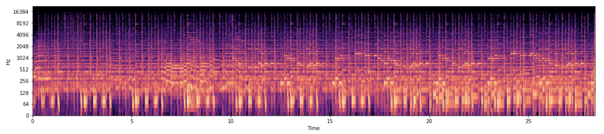
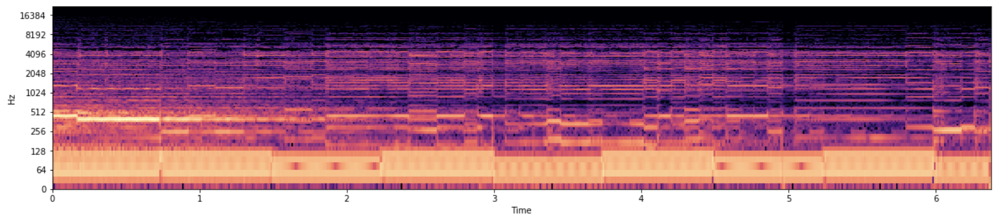
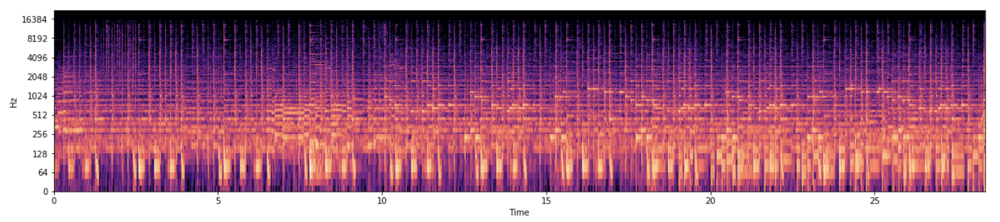
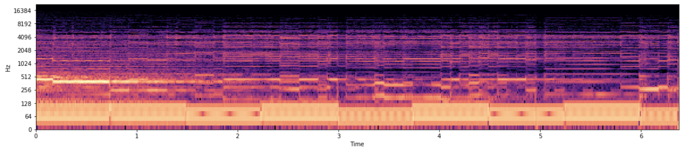
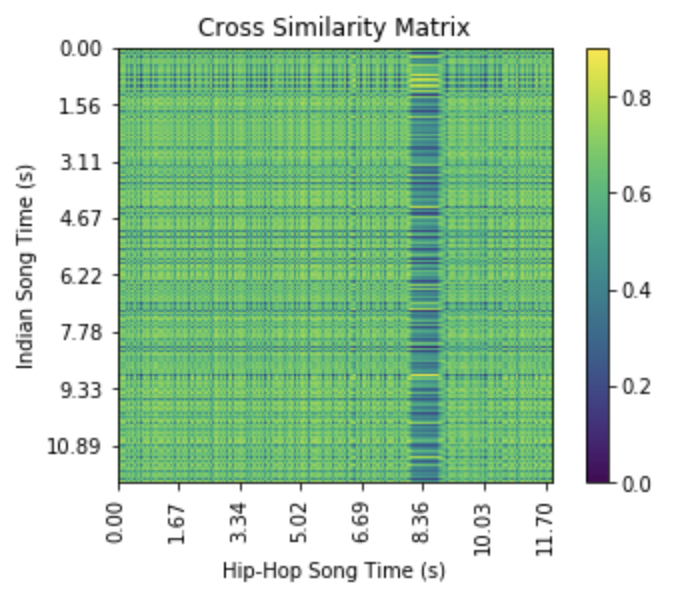

Introduction
Overview
Cultural Remix focuses on transforming hip-hop songs by incorporating prominent elements of South Asian music. The program analyzes a hip hop song’s percussive composition, and then determines a compatible South Asian background to overlay its original harmonics. The goal is to create a desirable remix by meshing the art of two cultures.
Motivation
Within the last two decades, South Asian music has greatly influenced leading artists in the American hip-hop genre. Rappers such as Jay-Z and Missy Elliot have notably utilized Hindi film music and Punjabi bhangra to enhance their art, and create transnational pieces. Numerous scholars have studied this phenomenon, and examined the implications of combining music from a conservative Indian culture with unorthodox and potentially controversial lyrics. While many expected a tense backlash towards this movement, instead numerous Indians have expressed explicit support for these remixes, and appreciate the increased exposure their culture is receiving within American mainstream media. As such, we thought it would be interesting to explore the intricacies of creating a cultural mashup and contribute to this niche genre.
Jay Z: Beware of the Boys
Missy Elliot: Get Ur Freak On
Data Set
Cultural Remix utilizes a set of handpicked Indian beats. There are 24 songs within the data set that produce 104 distinct beat segments, ranging from traditional Hindi film music to upbeat, modern bhangra. We would like to thank Vissagan Gopalakrishnan (VGo) for contributing several instrumentals to this project.
To build our dataset, we pulled different beats from a wide variety of online resources, including YouTube, SoundCloud, and Audiomack. We wanted to ensure that we were accumulating beats that were in the scope of our project, but were not all traditional bhangra beats. In order to do this, we pulled instrumentals of popular Indian songs and broke down their beats into several tracks (see segmentation in methodology). Given this automated process, we can take any instrumental and add its beat segments into our dataset.
Methodology
1. Components
The program first splits the inputted hip-hop song into its percussive and harmonic components. Cultural Remix analyzes the percussive component in order to compute a compatible South Asian background for the harmonics. As such, we used Librosa's harmonic percussive source separation to partition the hip-hop song into its two components.
2. Segmentation
The next step is segmenting each Indian song in the dataset and the hip-hop song's percussive component based on distinguishing acoustic traits.
Finding Boundaries with MSAF
The program uses the MSAF library to process each file, computing and outputting the time indices that correlate to the audio segments' boundaries as determined by the Checkerboard Foot algorithm. We then merge any consecutive segments that are too small based on a threshold to ensure better flow.
Music Samples
We then compute the beat indices that correlate to the calculated time indices, and grab the corresponding beat segments as determined by Librosa's beat tracker. Using these, we extract and pickle the segmented music samples.
3. Determining Similarity
We then compare and select the most similar Indian segment for each hip-hop segment.
Generating Spectrograms
As a preprocessing step, the program converts each segmented music sample into a spectrogram. We then utilize one of the similarity measures below to conduct segment-wise spectrogram comparison. For visualization purposes, below are three different audio segments' spectrograms. Clearly, the segments have differing acoustic patterns.
 



Similarity Measures
Cross Similarity Matrix
We first attempted segment-wise comparison by calculating the cross-similarity matrix for each pair of segments. We summed the trace of each given cross-similarity matrix, using this value as the base of our similarity measure. We then looked to maximize the sum of the trace, and selected the Indian segment that produced a cross-similarity matrix with the greatest summed trace value. However, because the segments are at varying tempos, the diagonal trace was not necessarily the point of greatest similarity (depicted below). As such, this similarity measure was not suitable for cross comparison given our data.

Fast DTW
As a result, Cultural Remix utilizes Dynamic Time Warping (DTW) to measure the similarity between two music segments. DTW is an algorithm designed to assess the similarity of sequences with different speeds. We used the built-in Python package fastdtw, which outputs the distance between two sequences using DTW and Euclidean distance. Our program selects the Indian segment with the lowest fastdtw distance from the given hip-hop segment. An added benefit of this approach is that it runs in linear time, significantly decreasing the overall runtime.
4. Finishing Touches
We now convert these selected segments into a continuous, remixed song.
Time Stretching and Alignment
Because the selected Indian segments do not necessarily match the length of the corresponding hip-hop segments, our program extends/trims the Indian segements accordingly. After doing so, the segments are concatenated to create a continuous background, aligned time-wise with the original song.
Overlaying the Harmonics
The final step of the process is overlaying the hip-hop song's harmonic component on the generated Indian percussive background. The volume of the background is decreased such that the vocals can be distinguished, and then this combination is outputted as the final remix.
Results
The following audio files are a few examples of our program's output. You can find more results in our folder Cultural Remix.
Driving Me Crazy, Sammy Adams (Remix)
'Til I Collapse, Eminem (Remix)
Headlines, Drake (Remix)
Trap Queen, Fetty Wap (Remix)
Motto, Drake (Remix)
In order to better understand our choice in similarity measure, described in section 3 of methodology, below are two remixes of the same audio file.
Take Care, Drake & Rihanna (Remix)
Take Care, Drake & Rihanna (CSM Remix)
Improvements
In the future, we could make several improvements to better our program. The first step we would take is refining our program's vocal extraction. Currently, modern day DJs use Audacity's built-in function to separate a song's vocals from the background. Unfortunately, Audacity has not released a Python library or extension, such that we cannot utilize this functionality. In Python, we tried both Repet and harmonic/percussive separation. We found harmonic/percussive separation to produce slightly clearer results, but ultimately is still far away from Audacity's quality. To combat this, we could restructure Cultural Remix such that the user must input 2 files, the vocals and the instrumentals. Another solution is deriving a completely new algorithm that splits vocals from a song's instrumentals, though we recognize this an extremely difficult computational problem.
The next step would be developing a front-end interface. Currently, Cultural Remix is a Jupyter program, but it would be better to develop an intuitive, web interface to better user experience.
A third improvement is allowing the remix to be more customizable. When the program determines which Indian beat to replace the hip-hop beat with, it uses a similarity measure to determine the most compatible Indian beat. That being said, it would be beneficial to store the second and third most similar beats. As such, if the user does not like a certain beat of the song, they can be prompted with an option to switch the given beat to the next most similar beat. This will allow users to customize each remix to their liking.
Conclusion
In conclusion, Cultural Remix successfully produces an Indian version of any inputted song. The program can split the harmonic and percussive elements of the song, segment it based on beat structures, overlay similar Indian beats onto the harmonic element of the song, and output a South Asian remix. In order to measure the success of our program, we surveyed random people at Northwestern who traditionally listen to Indian remixes. The biggest point of feedback was audio quality, specifically the quality of the vocals. After explaining our vision for improvement - as specified above - 80% of users claimed that certain parts of our remixes were comparable to current DJ material.
Furthermore, we approached the captains of a few dance teams on campus to determine if they would use our program to test different mixes for their shows - there was an unanimous yes across the board. They claimed that if the vocal quality was improved, our program would give them a clear picture of what an indian remix of a given song would sound like before requesting the song sample from their DJ. This would save them time in communicating with the DJ and effort in actually creating a mix.